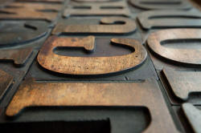
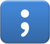

Punctuation

You can click on the symbols in the table above if you are looking for something specific. Your Back button will return you to this menu.
The following assumes some familiarity with terms like 'adverbial',
the nature of relative clauses and the differences between epithet
adjectives and classifiers.
Most of it will, however, be accessible without that knowledge and there
are links to take you to the relevant guides.
 |
Origins |
Until the invention of moveable type and the advent of the
printing press in the 15th century, punctuation of any kind in texts
was rare. Even spacing between words was unusual and readers
were expected to understand the lexemes and syntax of what was read
by examining its sense units rather than by marks or spaces to point
them out.
As long ago as the 5th century BCE, however, Greek playwrights were
using marks to signal pauses in speech of various lengths as an aid
to actors.
Some other marks were used in the Middle Ages, especially in
liturgical texts, to show where pausing should fall and many were
marginal notes signalling quotations and other characteristics of
the text. Copies of the Bible were designed to be read aloud
to a generally illiterate audience so scribes introduced a range of
markings to show pausing rather than syntactical relationships.
Because printed texts have standard symbols for letters, they can be
read (aloud and silently) much more quickly. Fast reading
precludes the ability to parse sentences and apply syntactical rules
in real time so there was an urgent need for some standardised form
of punctuation to aid the reader in making sense of the text.
By the middle of the 16th century some standardised punctuation,
including the use of the full stop, the colon and the comma is
discernible in Europe.
Later, the amount of punctuation which was possible in texts was
actually reduced by the invention of the typewriter because of the
impracticality of having a very wide range of marks. Early
typewriters, for example, had no space to include a keyboard
containing '!' and that was formed by overstriking a single
quotation mark with a full stop. Dashes were reduced to the
hyphen and longer dashes by simply repeating it.
The advent of digital word-processing programs has also influenced
modern punctuation and the @ sign, for example, previously rare, has
taken on a new life.
 |
Other languages |
As usual, languages differ and punctuation conventions are very variable.
- European languages
- Most of these use the same marks as English but conventions vary
considerably. In general, languages within the same families
(Romance, Slavic, Germanic etc.) will follow similar patterns but
even then there are variations. For example:
- The usual double quotation marks in English ("text") appear
in French as « text » and in German as „text” or «text».
Russian used both « text » and „text”, the latter, in more formal
writing, for citations, but most Slavic languages,
including Polish and Russian, prefer direct
speech to be preceded and followed by dashes as in – Come
in –.
European Portuguese uses the « text » format but Brazilian Portuguese follows the English convention. Both varieties use dashes to enclose direct speech. - Greek uses ';' as English uses '?' and uses a raised point [·] as a colon or semi-colon.
- Most Slavic languages do not use a colon for a book, paper or article subtitle so, for example: Speaking: a communicative approach becomes Speaking. A communicative approach
- In many European languages, including the Slavic and Germanic ones, a comma is used after almost all conjunctions, whether subordinating or coordinating.
- Spanish demands an inverted sign before exclamations and questions as in ¡ Text !, ¿ text ?
- Spacing varies with some languages inserting a space before or after marks (notably French and Spanish).
- The usual double quotation marks in English ("text") appear
in French as « text » and in German as „text” or «text».
Russian used both « text » and „text”, the latter, in more formal
writing, for citations, but most Slavic languages,
including Polish and Russian, prefer direct
speech to be preceded and followed by dashes as in – Come
in –.
- Chinese languages
- Modern written Chinese uses a range of marks imported from Europe including the comma, semi-colon, colon, exclamation and question mark. It also has some non-European marks derived from older forms including a different form of quotation marks, a different form of the comma when used in lists as well as wavy underlines and separate symbols for titles. The form of the full stop is a small hollow circle. It's complicated.
- Japanese
- is somewhat similar to Chinese in using a range of punctuation derived from Europe but also some of its own (especially the use of brackets). The form of the full stop is a small hollow circle and the language also employs a middle dot to separate words.
- Korean
- also has a range of home-grown marks as well as using European conventions. These include the middle dot to separate items in a list and some different forms of quotation marks and brackets.
- Thai
- uses a range of marks: a separation indicator, an abbreviation indicator, marks which show the beginning of a paragraph or the end of a story and so on. Thai does not normally separate words with spaces.
- Arabic
- Modern Arabic now uses a reversed comma (denoting a suitable place to pause when reading aloud) and reversed question mark. Earlier forms of Arabic had no punctuation.
- Turkish
- uses a range of punctuation similar to European uses.
|  |
English punctuation |
In English, punctuation has sometimes been compared to intonation written down but that's not very accurate as we shall see. Originally, however, as we saw at the outset, punctuation was developed by printers to guide the reading aloud of texts, especially bibles. Conventions which arose from that source are still evident but modern English punctuation use owes more to grammatical than phonological influences. There are, or were, two competing schools of thought:
- the elocutionary school which asserted that punctuation should only be used to guide the reader of a text concerning where and for how long to pause when reading aloud
- the syntactic school which asserted that punctuation should have a grammatical function, dividing off clauses, phrases and so on and making it clear where sentences stopped and started as well as denoting questions and exclamations
Punctuation has two functions, syntactically:
- Separation
Some marks are used to separate units of language. The full stop, the comma and the colon are examples. The separation can occur:- Between units: for example, we use a full stop or a
semi-colon to separate discrete sentences or clauses. So we
get, e.g.:
The sun was shining. The overnight rain had stopped
or
The weather was lovely; the rain had stopped. - Within units: for example, we use the comma to separate out
a smaller unit inside a larger one. So we get, e.g.:
The rain, or what was left of it, finally stopped.
- Between units: for example, we use a full stop or a
semi-colon to separate discrete sentences or clauses. So we
get, e.g.:
- Specification
Some marks specify the function of language. The most obvious examples are question and exclamation marks but also included would be the apostrophe because that is used to show the function of the noun (possessive or descriptive when used, plural when absent). It also, in English, denotes an ellipted letter or letters.
We'll consider the most common and troublesome marks one by one.
 |
the comma |
The comma is a separation mark but it differs fundamentally from the
full stop, the colon and the semi-colon.
What is that difference?
Click here when you have an
answer.
The comma is used to separate parts of a
sentence. Usually, the colon, the semi-colon and a full stop are used to
separate units which can stand alone and be separated by a full stop.
For example:
She wanted to tell me the truth: Mary wasn't coming.
She wanted to tell me the truth; it wasn't going to be nice.
She wanted to tell me the truth. I knew it wasn't going to be
nice.
None of those sentences would be correct with the insertion of a comma.
Putting one in results in a comma splice. For more on that, see
the
answer about what comma splices are linked in the list of related guides at the end.
A comma, on the other hand, separates off sense units
within sentences or clauses.
By some measures, there are nearly 20 different rules for how we use a comma in English, and we'll deal with some in a minute. We can summarise more easily when a comma is allowed.
- The sentence parts must be joined together. For example:
The station itself was dark and deserted, but the station bar was warm and inviting
is correct punctuation use (although the comma is not obligatory).
*The station itself was dark and deserted, the station bar was warm and inviting
is incorrect because there's a comma splice between two stand-alone clauses. - The sentence parts must be grammatically similar. It is
possible, for example, to have
The station was deserted, and there was no one around to ask
but not possible to use a comma like this:
*The station was deserted, and the workers have been sitting in the bar
because the change of number and tense makes two sentences conventional. - We can't leave out verbs in the second part of the sentence
and still use a comma so
*The station appeared deserted, and filthy
is not possible although
The station appeared deserted, and it looked uncared for and dirty
is OK with or without the comma.
In the first sentence, leaving out the subject and the verb appear makes a comma impossible. - The parts of the sentence must be connected semantically (in terms of meaning).
A sentence such as
*Victoria station appeared deserted, although it was raining in Tokyo
is nonsense.
 |
Rules of comma use |
Note 1: the rules and conventions are different in different
languages. Many will demand a comma between all potentially
independent clauses. So we get errors such as
*I think, he's
crazy.
Note 2: the comma and the full stop are by far the most
frequent punctuation marks in English. The comma, however, is the
one which allows the most choice to the writer. Many
(non-)insertions of commas are matters of personal preference.
- adverbials
- A comma is never wrong, although not always necessary, when an
adverbial is placed at the front of a sentence.
Later, they went to the party
At six o'clock, we went home
but not
*They went to the party, later
*The went home, at six o'clock - conditional and contingent structures
- Commas are conventionally only used when the conjunction is
fronted so we allow:
You'll see her if you come
but (usually) prefer
If you come, you'll see her
It is almost always essential to put a comma into the sentence if the fronted adverbial contains a non-finite verb form or no verb at all:
In order to be sure to meet her, he went to the party
Hoping to see her, he went to the party
In hope of an encounter, he went to the party - disjuncts and conjuncts
- Disjuncts and conjuncts, wherever they occur within the clause, are
separated by commas conventionally:
It is, in my opinion, less than perfect
She has, however, come round to the idea
He will not change his mind, whatever you say
See the guide to adverbials linked in the list of related guides at the end, for more.
There are times when it is necessary to separate off the adverbial, wherever it comes in the sentence, to avoid confusion, too. For example, remove the commas from this to see what is meant.
He came to the party, hoping to see her, dressed in a gorilla suit - relative clauses
- If the part of the sentence you are considering can be separated
off from the rest by putting brackets around it, it is non-integral
to the sense and/or is a non-defining relative clause so commas should
be used. See
the guide to
relative clauses linked in the list of related guides at the end, for more.
So we can have:
I met the doctor, who lives near me, in the pub
vs.
I met the doctor who lives near me in the pub
In the first, the fact that the doctor lives near me is additional information; in the second, it defines which doctor we mean.
Many other languages, incidentally, do not usually distinguish the two types of relative clauses and word-processor grammar checkers are mostly unable to distinguish. Most other European languages require commas in all relative clauses. - in lists
- Lists of anything and of any length are separated by commas.
Two items may also be connected with and with no comma
involved. If there are more than two items, the final comma is
optional (and called either the Oxford comma, incidentally, because
that is how the style was used by Oxford University Press, or a
serial comma).
She slowly, carefully opened the parcel
He took a long, deep drink
They went in, around(,) and through the garden without meeting
They can, may(,) and probably will(,) come to the party
She brought beer, cokes(,) and crisps.
She let herself in, unpacked the shopping, fed the cat(,) and went to bed.
The Oxford comma is also sometimes referred to as the Harvard comma and, indeed, most American style guides insist on its use.
There are times when the use of the comma before and can be helpful in avoiding ambiguity. For example:
He spoke confidentially to his old friends, John and Peter and Fred
may leave the reader wondering whether there are three old friends or two as well as Fred. If the comma is inserted, we get:
He spoke confidentially to his old friends, John and Peter, and Fred
the ambiguity is lessened at least because most people will assume that the two old friends are John and Peter and Fred does not fall into that category.
So, even if you do not normally use a serial comma, it is recommended when any ambiguity is avoided by its use.
Regarding a comma before etc. there is some debate. The line taken by this site is not to use a comma before the abbreviation etc. because the et is Latin for and which would result in the use of a serial comma. This site does not use a serial comma so the lack of a comma before etc. is consistent with that use. If you use a serial comma, place one before etc., too. - adjectives and classifiers
- Multiple adjectives are usually separated by commas so we get:
a large, lanky boy
but classifiers are not separated from adjectives by commas so we get:
a large, lanky university student
We can allow, therefore:
a beautiful, blue racing car
but not
*a beautiful, blue, racing car
See the guide to adjectives linked in the list of related guides at the end, for more. - in apposition
- If two items in a sentence denote the same thing (i.e. are
co-referential), they are in
apposition and are separated off by commas:
Ms. Smith, my landlady, has raised the rent
There are three animals, bears, snakes and tortoises, which hibernate in this country
There is an exception to the insertion of a comma in some circumstances. When the proper name comes first, the insertion is optional so we get:
Jones the butcher is bringing the food
not
Jones, the butcher, is bringing food. - subordination and coordination
- When clauses of equal value are coordinated (with and, but,
so that, for, yet, or, so) commas are frequently omitted and
never obligatory.
When a main and dependent clause are joined by subordinating conjunctions, commas are usually required.
We get, therefore:
I'll take you to the station and pick you up when you get back
I called for her but she was out
I will drive you there(,) although you'll have to pay for the petrol
Because the weather was so awful(,) we stayed in the whole day
In other languages, such as those in the Slavic and Germanic groups, commas are required with all subordinating clauses. This leads to errors such as:
*I think, she's going to be late. - salutations and sign-offs
- Rules vary across languages and between varieties of the same
language but British English uses the comma after any salutation as
in:
Dear Mrs Jones,
Dear John,
and after the conventional endings and sign-offs as in, e.g.:
Yours sincerely,
Love,
Regards,
etc.
AmE prefers the salutation to be followed by a colon (see below).
Most of the 20 or so rules for comma use that appear on various websites and in books may be accounted for by the rules above.
 |
the point and full stop |
We can distinguish here between a full stop (technically
referring to the mark at the end of a sentence) and an interpunct
which falls not on the base line but in
the middle, vertically, of the character row.
Terminology varies and the full stop is also known as a
full point, a point, a period or a dot depending on circumstances.
AmE usage is usually to refer to a full stop as a
period. In IT-speak, it is always dot, so eltconcourse.com is pronounced
as e l t concourse dot com (/iː.el.tiː.ˈkɒŋk.ɔːs.dɒt.ˈkɒm/).
In mathematics, whether the dot is raised or on the baseline, the
term is point.
The interpunct is also known as the middle dot,
middot and interpoint.
Modern English usage has settled on a baseline point to indicate
decimals as in, e.g.:
5.6 (five and six tenths)
but older usage had a raised point as in:
5·6
for the same number.
In English, numbers following the decimal point are read
individually so, e.g.:
10.87
is read as
ten point eight seven
but in many languages, the convention is to use a comma to signal
the decimal and to say them as ordinary
numbers so
10,87
would be read as
ten comma eighty-seven
English generally uses a comma to separate thousands so, for
example:
3,100,000
is
three million, one hundred thousand
in most other languages that is written as
3.100.000
The middle dot or interpunct is used in some languages to separate
words or the items in a list (see above).
The full stop or period has a number of uses:
- at the end of a sentence
- If a sentence is not a question or an exclamation, a full
stop or period is inserted to signal its end, like this.
In text messages and other short electronic texts, no end punctuation is conventional with ideas being separated by paragraph marks, instead. - between initials
- This use is dying out but one still sees, e.g., both:
The U.S.A.
D.V.D
The U.K.
etc. and the more modern and common:
The USA
DVD
The UK
etc. - separating initials
- AmE usage prefers to separate initial with points such as:
T. S. Eliot
T. E. Lawrence
etc., with a space between the marks.
but BrE prefers usually to have no marks and will use:
TS Eliot
TE Lawrence
etc. with a space after the last initial. - ending abbreviations
- AmE uses a period at the end of all abbreviations so we
have:
Fred Jones Jr.
Mr. Smith
Dr. Jones
adj.
vb.
etc.
BrE has a more complicated rule:
If the abbreviation ends with the same letter as the unabbreviated version, no mark is used so we have:
Fred Jones Jr
Mr Smith
Dr Jones
vb
but if the abbreviation does not end with the same letter, a full stop is used as in:
Prof. Mary Smith
Rev. Peters
adj.
etc. - in computing
- The full point is a delimiter in, e.g.:
punctuation.docx
stop.txt
192.168.1.4
thispage.html
etc. and is always pronounced as dot. - in discourse
- The words full stop and period (in BrE and
AME respectively) are used to signal the end of a willingness to
discuss something as in, e.g.:
I'm not paying for it. Full stop.
I'm not coming. Period.
the colon |
Colons are quite rare in English and perform three related functions:
- They indicate that what follows is caused or fulfilled by what
came before:
It was raining heavily: that's why I didn't go out.
You are obviously very tired: I should go now.
In both those cases, the sentences can be split into two independent sentences with no loss of meaning. - They indicate that a list is to follow:
This sentence contains two each of these words: verbs, nouns, adjectives and prepositions.
In some analyses, a colon is only appropriate if the preceding clause ends in a noun, so, for example:
We need these ingredients: cheese, butter, eggs, flour and sugar
is correct, but:
We put in: cheese, butter, eggs, flour and sugar
is incorrect because the colon has been used unnecessarily after a preposition and
We need: cheese, butter, eggs, flour and sugar
is also incorrect because the colon is inserted after a verb. - They indicate a subtitle, especially for a book or paper so we
get, e.g.:
Using English punctuation: a users' guide
In American English, the colon is used following the salutation in formal letters: Dear Sir:. British English prefers the comma as in, Dear Mary, but other languages such as Russian and Greek frequently use an exclamations mark as in: Dear Customers!
The colon can be replaced by a conjunct, conjunction or other
expression:
It was raining heavily(,) so I didn't go out.
It was raining heavily. Therefore, I didn't go out.
It was raining heavily, which meant I didn't go out.
There is a guide to conjuncts linked in the list of related guides at the end.
|  |
the semi-colon |
Semi-colons connect two independent clauses but in other respects,
they function to separate ideas just as the comma does. They should
be used with care and only when the two clauses are sufficiently closely
related to be part of the same sentence.
I was getting soaked through; it was still raining hard.
but not
*I was getting soaked through; the rain was easing
Replacing a semi-colon with a comma results, usually, in a run-on
or comma-spliced sentence and is poor style at best, illiterate at
worst.
Semi-colons are also sometimes used to separate two-level lists
with semi-colons between larger items and commas between members of
the same class within the larger items. That way, confusion
can be avoided as in, for example:
I took my friend, John; his brother, Pete;
their parents, Joan and Fred and the neighbours out to dinner on my
birthday.
where, without the semi-colons we would not know that Pete is
John's brother's friend, not a separate person and so on.
dashes and brackets |
Dashes and brackets can be used instead of commas if there's a good
reason for doing so. Dashes, in particular, should be handled with
care and not used to separate fronted adverbials (and nor should
brackets be used that way). So these are unconventional at least:
Fortunately – the rain was easing
The rain was – fortunately – easing
(Fortunately) the rain was easing
There is sometimes a subtle difference between separating ideas with
commas and putting the item in brackets. Brackets are usually taken by
the reader to refer to comment on the last phrase but commas are taken
to refer to the whole preceding clause. Compare, for example:
He first had the idea when he was a child (he
claims)
with
He first had the idea when he was a child, he
claims
The brackets denote the fact that it the fact that he was a child when
he had the idea that is being questioned but the commas call the whole
clause, i.e., that he had the idea as a child, into question.
Round brackets are also used to indicate alternatives as in:
Your child(ren) must come on time
Any helper(s) will be made welcome
There is a variety of other bracketing conventions including [],
{} and <> and they have different uses.
In particular, square brackets may be used to embed parentheses
within parentheses so we get, e.g.:
This is (as you have said [but not included
in your report])
a serious issue.
They are also used to indicate an insertion, usually by an editor,
in a citation so we get, e.g.:
The assumption [which] he made was
unwarranted
Square brackets when a quotation has been altered to make the sense
clear or the grammar correct, are used for insertions and changes so we see, for example:
She said, "[The fire] was awful"
Guru has commented, "[The exercise is] undoable."
and in both cases, the original speaker or writer might have said
It was awful
All these exercises are undoable
so the writer has had to expand the quotation.
Brace brackets are used to indicate alternative insertions as in,
e.g.,
In all cases, closing brackets must always be used.
If the brackets enclose a whole sentence, the full stop appears
within them. If the brackets do not enclose the whole sentence
the full stop follows the bracket.
Dashes are often used instead of brackets but, as with brackets,
they must be used in pairs (unless the part following the dash ends
the sentence).
Dashes may be symbolised as -, a simple hyphen, –, an en-dash or —,
an em-dash.
The use of a colon followed by dash (:–) to precede a list is now obsolete and replaced by the colon alone (see above for the limitations and restrictions) although it is frequently used in standard Indian English texts.
hyphen |
There are a number of uses:
- To show that a word has been split at the end of a line. Normally, the hyphen should only be inserted between syllables although house compositors' rules vary from publisher to publisher.
- In written numbers and fractions:
thirty-three, eighty-four, two-thirds, five-sixths
etc. - After certain prefixes, especially less frequent ones such as pseudo-, quasi-, post- etc. It is not inserted after commoner prefixes such as ex-, pre-, super- etc. unless the word so formed is very unusual. The convention of using a hyphen when the next morpheme begins with the same letter as the final one of the prefix is dying out so we commonly see cooperate, reenter etc. rather than co-operate, re-enter.
- Following the first part of a compound when two related
compounds are used as in, e.g.:
the second- and third-placed runners
the super- and sub-script letters
etc. - Compound nouns are variably hyphenated, written as two words
or written as solid words and users, publishers, spell-checkers
and dictionaries differ. We see, therefore:
windmill, wind-mill, wind mill
gas light, gas-light, gaslight
oceangoing, ocean-going, ocean going
The rule of thumb is that as a combination becomes more frequent the direction of movement is from two words to a hyphenated version to a solid word. Over the years we get the change, for example, from
loud speaker
to
loud-speaker
to
loudspeaker
and, as the spelling changes, so the pronunciation changes, moving the stress from the second to the first item in the compound (/laʊd.ˈspiːkə/ → /ˈlaʊd.ˈspiːkə/ → /ˈlaʊd.spiːkə/. - As an abbreviation for to as in, e.g.: the
1914-18 war, 16-24 seats etc. In this case, it is
common to insert a short en-dash (–) or em-dash (—)
as in:
1943 – 1945
or
1943 — 1945
instead of
1943-1945 etc.
en- and em-dashes may or may not be preceded and followed by a space. On this site, we include the spaces, others do not. - To link two items as in, e.g.: the Smith-Jones match, Mr Rees-King, the London-Paris flight etc. En- and em-dashes are also used this way.
- With double adjectives to signal that they should be
considered a single concept as in, e.g.:
the red-brick house
vs.
the red, brick house - With other compound expressions used adjectivally or as
classifiers, e.g.:
an up-to-date list
a hole-in-the-corner relationship - Some currency expressions also include the use of a hyphen,
notably in India so 50 rupees is written as Rs 50/- or
as Rs 50/=.
In Britain, pre-decimal (i.e., before 1970) amounts of money also used this convention so two shillings was conventionally written as 2/- and this convention was also used in many other nations before any currency reform.
 |
tilde |
The ∼ (called a tilde or swung dash) mark is commonly used:
- In languages other than English, such as Japanese to show
a range:
8 ∼ 15
for example, where English uses
8 - 15
or
8–15 - Mathematically, to mean approximately or similar to as in,
e.g.:
x ∼ y
or
∼25.00
The double tilde symbol ≈ is often used in the same way.
In mathematics, the symbol is sometimes called twiddle. - In dictionaries, to denote that the head word or lemma has
been omitted in a subsequent example as in, e.g.:
He's the black ∼of the family - Over a letter in some languages to denote a difference in pronunciation so, e.g., in Spanish, ñ differs from n in being nasalised. The letter õ is considered a separate grapheme in, e.g., Finnish.
inverted commas, quotations etc. |
Most writers in English use double inverted commas for direct speech but some prefer single marks. Whichever is used, the opening and closing marks are both raised. As we saw above, languages are very variable in this regard.
For a direct quotation within a sentence, single inverted commas are
usual:
That sign says 'No smoking'
Publishing houses vary in their conventions concerning the use of double or
singular inverted commas for dialogue. The usual convention is:
"I'm glad we could meet," she said (comma inside the inverted
commas) or
She said, "I'm glad we could meet." (comma after
the reporting verb
but with the full stop inside the inverted commas).
If either ! or ? occur inside quotations, no comma or capital letter
follows:
"Go away!" he shrieked.
In the USA, single inverted commas often mark off direct speech in
texts and in Britain, the convention is to use double inverted commas.
Single inverted commas are conventional in both varieties for the names
of programmes, books, films etc., e.g.:
She sang 'Keep the Home
Fires Burning' again.
Conventions vary concerning whether full stops and commas are
placed within or outside the inverted commas and many word
processing programs allow the user to set the preferences.
In AmE, it is common to find the full stop or comma outside the
inverted commas so we get, e.g.:
"Go away", he said.
Mary said, "Come in".
In BrE, that would be punctuated as:
"Go away," he said.
Mary said, "Come in."
Logic sometimes dictates that the ? goes outside the inverted
commas so we get, e.g.:
"May I come, too?" she said
and
Did she say, "May I come, too"?
Occasionally, two ? marks may appear as in:
Did she say, "Can I come?"?
When reporting conversations verbatim in direct speech, any
change of speaker should be signalled by a new paragraph.
If a speaker's lines go over two or more paragraphs, the inverted
commas are not closed until the end but each new paragraph begins
with them.
the question and exclamation marks |
The ? is, rather obviously, used to show an interrogative but may
also be used to show how something has been said in terms of its
intonation, e.g.:
You're leaving early?
vs.
You're leaving
early.
Some sentences with subordinate clauses may lose the questions mark
(although it is technically required) when the clause is long enough:
Can you send me an email when you have finished all the work because
I need to get my bank to transfer the money into my French account
before the end of the financial year.
The ! is tonal rather than grammatical and signals a sharply rising
tone or a loudly spoken item. The mark is often used with single
words to show that something has been forcefully said. For
example:
Wow!
Gosh!
Blimey!
etc.
Exclamations marks should not be overused! They are a sign of
naive or immature writing!!!
In English, it is no longer conventional to have a space before either
of these marks but in many other languages the convention of doing so is
maintained.
|
|
the apostrophe |
The use of the apostrophe in English was not formalised until the
19th century.
Errors abound and there are those out here who delight in collecting,
for example:
 |
 |
|
| all wrong | ||
For the genitive (or possessive to be a lot less precise):
- Singular nouns which do not end in -s take 's to show possession: the man's bicycle, Peter's friend etc.
- Singular nouns which end in -s can be amended both with a simple
' or with 's (conventions in publishing houses vary):
James' car or
James's car, the class' teacher or the class's teacher.
Pronunciation varies too, with some preferring /dʒeɪmzɪz kɑː/ and others preferring /dʒeɪmz kɑː/ with a middle road of /dʒeɪmzəz kɑː/. - Plural nouns ending in -s (i.e., most of them) take a simple ' after the s: the neighbours' garden, the soldiers' position etc.
- Plural nouns not ending in -s take 's: the men's jobs, the formulae's solutions, the syllabi's main faults, the children's toys etc.
- If two separate entities are imagined, both take the apostrophe:
John's and Peter's houses are in London
so there are two separate houses
but in
John and Peter's house is in London
there is a single house belonging to two people.
and in
John and Peter's houses are in London
there is more than one house belonging to the same two people.
This is called the phrasal genitive, incidentally, and the guide to the genitive has more examples. - Compound nouns add the apostrophe to the end element:
my father in law's house
my step-sister's houses
etc.
For contractions:
- All contracted forms require an apostrophe:
you're [you are], he's [he is], they'll [they will], the horse'll [the horse will]
etc. - Contracted (i.e. clipped) forms of some words and numbers
sometimes take an apostrophe but some clipped forms are so
embedded in the language that they have lost it:
the '90s (also without the apostrophe)
on the 'phone (also without the apostrophe)
'flu' (usually without the apostrophes)
ad, maths, photos, sitcom, pub (all usually without apostrophes)
etc. - Representations of dialect forms also take apostrophes where
needed:
huntin', shootin' an' fishin'
'old yer 'orses
etc.
Common apostrophe errors:
- The word its is the possessive determiner formed from
it and it takes no apostrophe:
the cat licked its paws
vs.
it's lying in the garden.
in which the apostrophe denotes the omission of the 'i' in the verb. -
one's is the possessive determiner form of one:
one must try to do one's best
ones is the plural pronoun form of one meaning referring to nouns and takes no apostrophe:
I want the blue one not any of the red ones - your is the possessive determiner (your car etc.). you're is the contraction of you are
- whose is the possessive relative pronoun and wh-question word:
whose car is this?
he's the man whose car I hit
who's is the contracted form of who is / who has:
who's done the damage?
who's coming? - what's is a contraction of what
has, what does and what is
as in:
What's he done?
What's he do?
What's its name? - Abbreviations in the plural do not take apostrophes:
DVDs, TVs, PCs, HDDs
etc.
In the possessive or with contractions, they function as above:
the DVD's broken
the PC's problem
the HDDs' capacities
etc. - The reciprocal pronouns each other and one another
are both robustly singular so the genitive apostrophe use should
reflect this. So:
*We spent time at each others' houses
*We went to one anothers' houses
are incorrect and should be
We spent time at each other's houses
We went to one another's houses
Disputed areas (you choose):
- Numbers: we can have the 90's or the 90s or even the '90's or the '90s.
- Letters: is spelt with two t's or with two 't's or with two "t"s or, rarely, with two ts.
|
|
ellipsis |
Conventionally, three dots only are all that is required to show that
something has been omitted. The omission may be deliberate (as in
leaving out irrelevance in a citation) or because it betokens, in
speech, a pause or hesitation. For example:
The possibilities which were mentioned ... were all
rejected
I may come to the party. Who can say ...
Publishing houses vary on whether an ellipsis is preceded by a
space so both:
I can tell you what to do...
and
I can tell you what to do ...
are accepted.
See also the use of the tilde, above, to denote an omission.
slash marks |
The backslash is generally confined to computer file systems and can
be ignored (although some students may need to know how to say it
aloud).
The forward slash needs a little care because it sometimes means
and, sometimes or and sometimes and or or.
If it is not clear from the context, you should avoid its use and use
the conjunctions.
So, for example:
any written / spoken text
means the text can be either but
This can be completed with a sentence and/or a
single word
implies that both options are possible but that they are exclusive:
choose one or the other. However:
He's the owner/manager
implies not either or but both. To disambiguate such expressions,
many writers prefer to use a hyphen to denote combined roles as in,
e.g.:
She's the actor-director
More rarely, the slash is referred to as stroke or oblique.
It is commonly used to indicate a time scale overlapping years or months as in
e.g.:
the 2011/12 course
the Spring/Summer season
etc.
Publishing houses and style guides vary in whether a space is used
before and after a slash mark.
 |
other symbols |
A number of other symbols are used in printed texts which may not be
familiar to learners of English. Some are internationally
recognised, others are specific to English-speaking cultures and
variably so, even then.
These include:
| & | the ampersand, read aloud as and, derives from the phrase and per se and. Its use is confined to informal writing, signs, lists, names of some business and some bibliographies. |
| * | asterisk, commonly used for footnotes. On this site and in resource books on linguistics the * conventionally precedes a malformed structure and a ? precedes a questionable or disputed form. It is variably called a starred form or an asterisked form. |
| † | dagger for a subsequent footnote (also called obelisk or obelus) |
| ‡ | double dagger for the next footnote (also called diesis) |
| © | copyright |
| ™ | trademark |
| ® | registered trade mark |
| @ | at for email addresses and prices |
Mathematical symbols are international but learners need to know how they are read aloud so probably the minimum to teach are:
| + | plus | ≥ | is more than or equal to |
| – | minus | ≤ | is less than or equal to |
| x | times with numbers, by with areas | ° | degrees |
| ÷ | divided by (often replaced with /, pronounced over) | . | point (numbers after points are read individually in English) |
| ± | plus or minus | # | number or hash |
| = | equals | % | percent |
| ≈ | is approximately equal to | 2 | squared |
| ≠ | is not equal to | 3 | cubed (thereafter to the power of n) |
| < | is less than | -9 | a nano- quantity |
| > | is more than | √ | (the square) root (of) |
How fractions are pronounced may also be important (two-thirds, three-fifths etc.).
A note on teaching punctuation
It is unlikely, and probably unnecessary, that you would devote whole
lessons to this area (although a focus on paragraphing conventionally in
texts is another matter).
However, the temptation is either to ignore or simply correct errors in
learners' written work and that's not enough.
You do need to explain to learners where their L1 conventions may differ
and make clear what the rules are in English concerning the punctuation
which is troubling them.
| Related links | |
| comma splices | the guide to what they are and how to avoid them |
| adverbials | the guide to adjuncts, conjuncts and disjuncts |
| relative clauses | which discusses the nature of punctuation in defining and non-defining clauses |
| adjectives | for more on classifiers and epithets |
| conjuncts | and how they differ from conjunctions as well as the functions they perform |
References:
Chalker, S, 1984, Current English Grammar, London: Macmillan
Quirk, R, Greenbaum, S, Leech, G & Svartvik, J, 1972, A Grammar of
Contemporary English,
Harlow: Longman